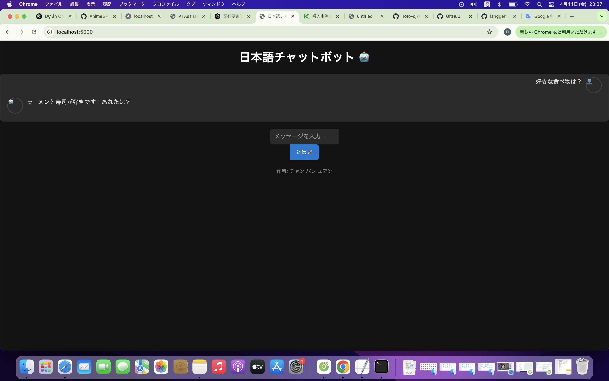

📌 プロジェクト概要
FlaskとNLTKを使った日本語対応チャットボットアプリです。
感情分析、チャット履歴保存、ダークモード対応などを含みます。
🛠 使用技術
- Python 3.10
- Flask 3
- NLTK
- HTML/CSS/JavaScript
- Tailwind CSS
🖼 スクリーンショット
🧠 学びと感想
Pythonと日本語処理の難しさを実感しつつも、実用的なチャットボットを構築できたことで大きな達成感を得ました。
AIエンジニア志望｜日本語チャットボット開発者
FlaskとNLTKを使った日本語対応チャットボットアプリです。
感情分析、チャット履歴保存、ダークモード対応などを含みます。
Pythonと日本語処理の難しさを実感しつつも、実用的なチャットボットを構築できたことで大きな達成感を得ました。